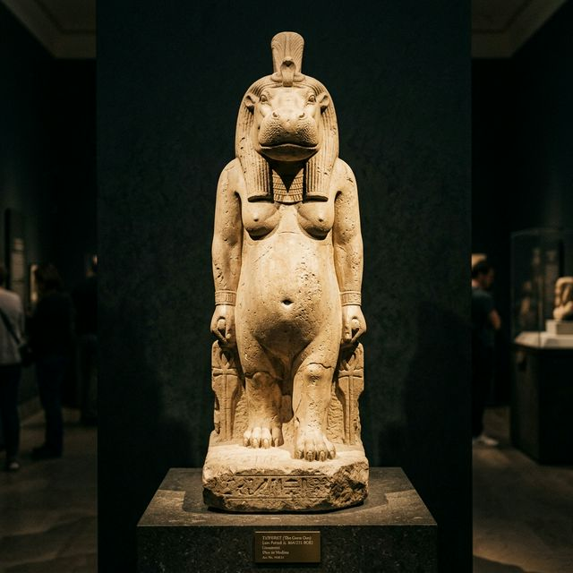

Dans la mythologie égyptienne, la femelle était profondément vénérée et perçue comme un bouclier divin inébranlable contre le chaos.
Le mythe
Taweret, "La Grande", protégeait les mères et les nouveau-nés en effrayant les démons par son apparence redoutable.
L'aspect
Une fusion de lion, de crocodile et d'hippopotame, symbolisant la force protectrice ultime de la nature.

Statue antique de Taweret